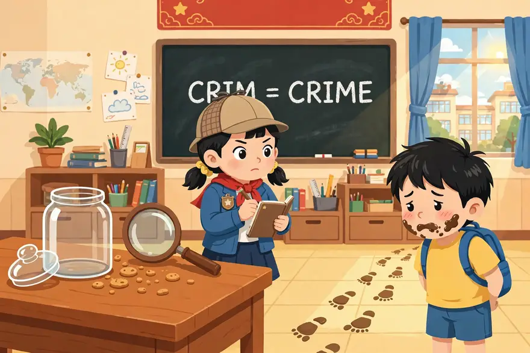
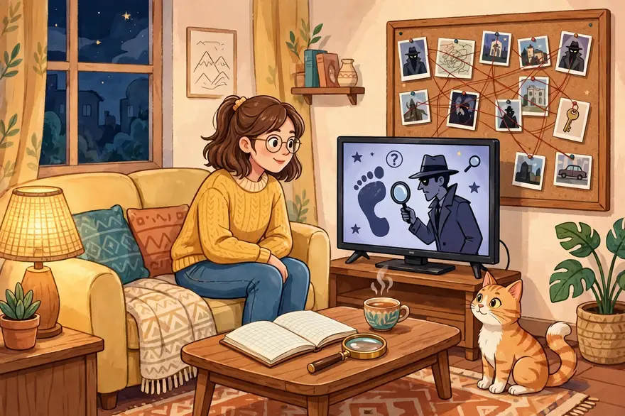
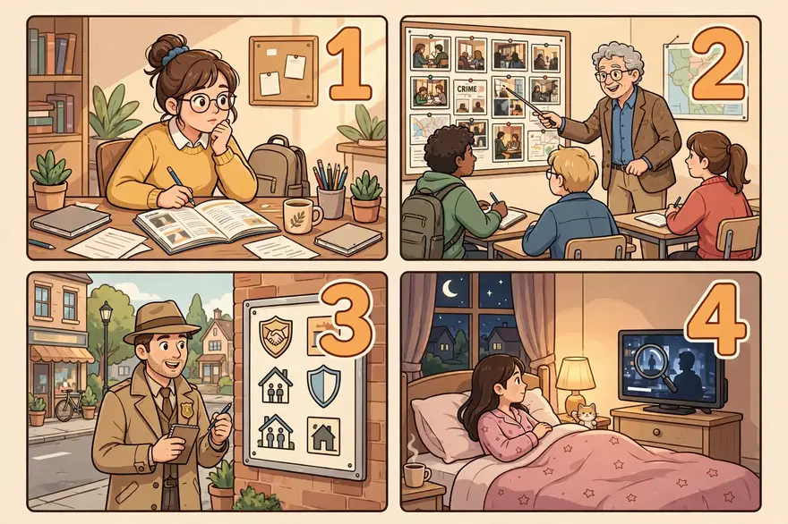
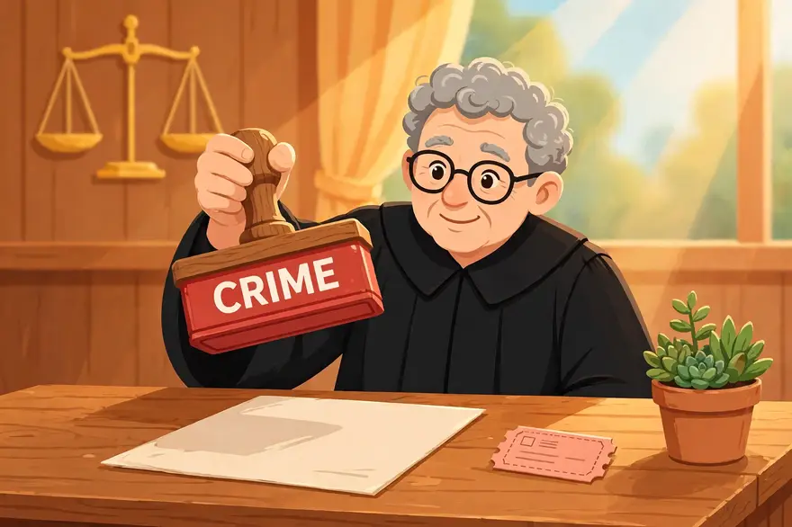
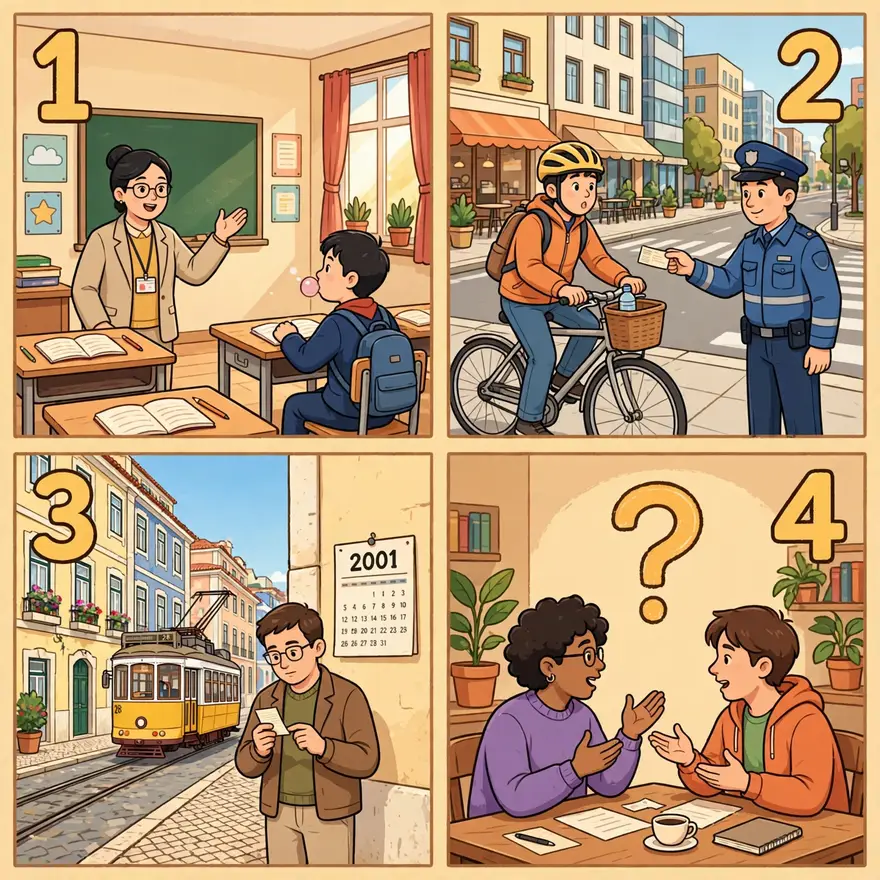
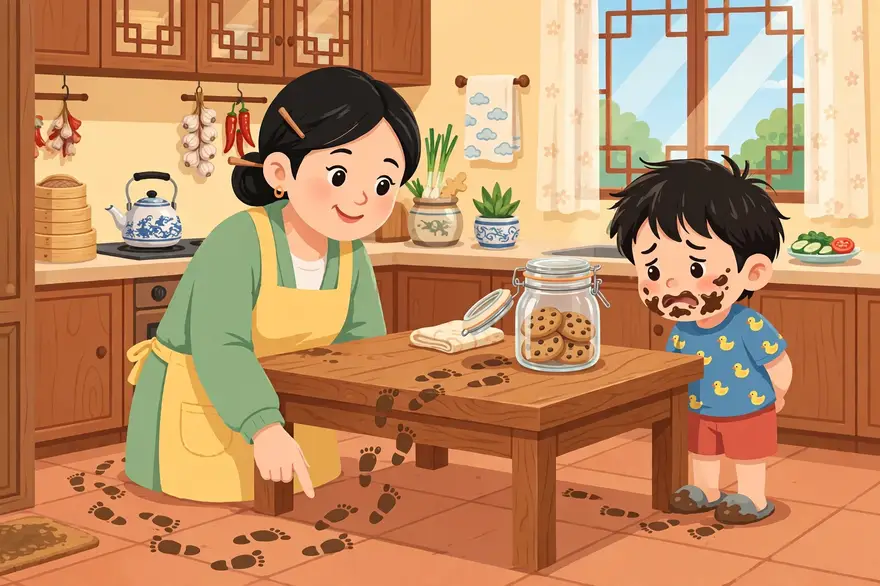
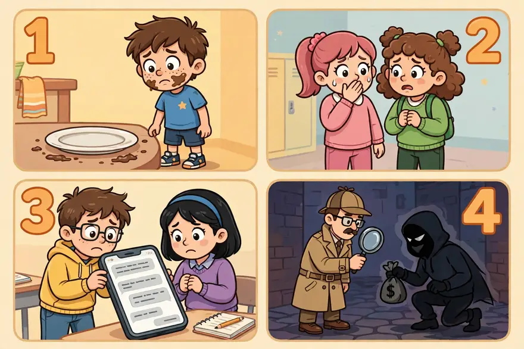
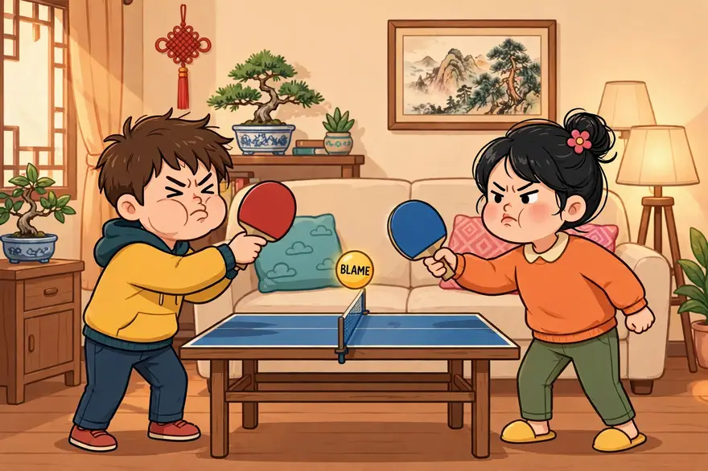
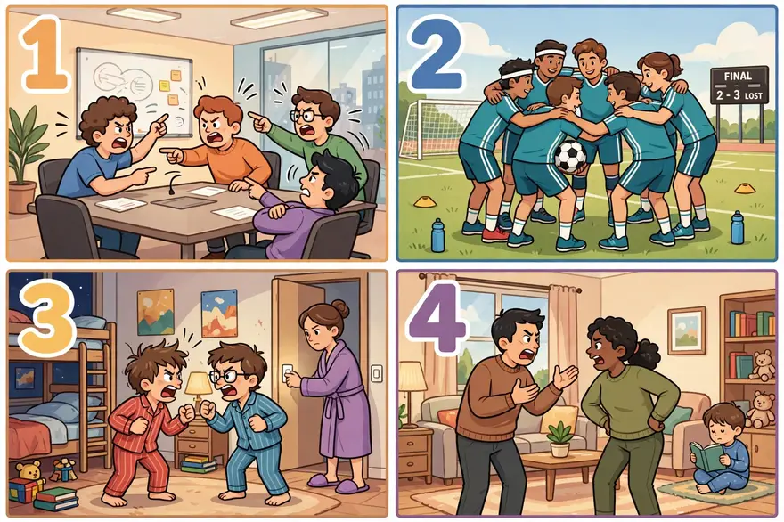
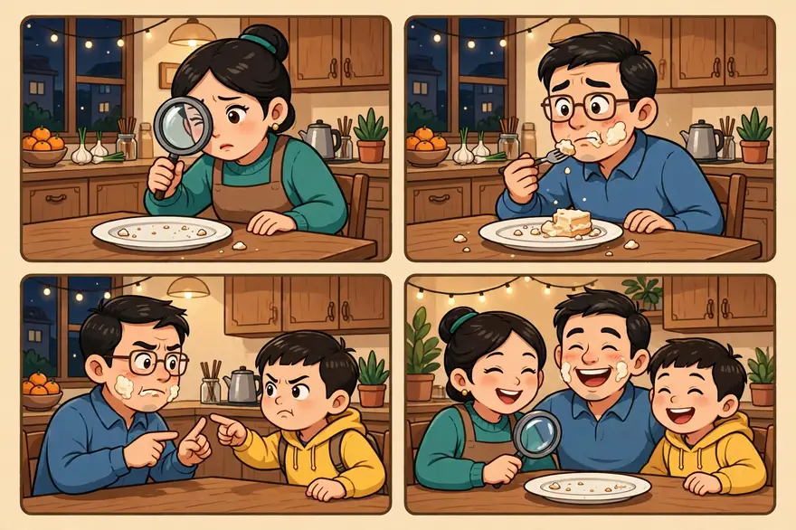

点开单元看词根；带链接的是已上线词根，其余陆续制作中。
词汇课首页 › Unit 1 › CRIM
🔊 词根发音：/krɪm/（和 crime「罪行」的开头读法一样——CRIM 就是 crime 的词根）
Our class cookie jar was empty this morning, and the trail of muddy footprints on the floor was enough to incriminate two boys — Ming and Gang. Our head teacher, a big fan of criminology documentaries, turned the whole thing into a detective game. Ming said Gang ate them; Gang said Ming ate them, and their mutual recriminations went on for ten minutes. In the end, the teacher decided to decriminalize after-school snacks: no more demerits for eating biscuits, just wash your own plate. Case closed — and the real thief? The class hamster, caught red-handed at midnight.
本则为自创热点段子：词是真的，事是编的——criminology、decriminalize、incriminate、recrimination 四个词一个不少，全在里面。顺便一提：学校的规定当然不是刑法，这里的 decriminalize 是借用法律词开的玩笑——它真正的意思是「取消刑事处罚」，见下面的精讲。
CRIM comes from the Latin words for “fault or crime” or “accusation.” It’s obvious where the root shows up most commonly in English. A crime is an act forbidden by the government, which the government itself will punish you for, and for which you may be branded a criminal. A crime is usually more serious than a tort (see TORT), a “civil wrong” for which the wronged person must himself sue if he wants to get repaid in some way.
CRIM 一家全和「罪」有关，但分工清楚：criminology 是研究罪的学问，decriminalize 是把罪名拿掉，incriminate 是把人牵连进罪里，recrimination 是把指控打回去。

在图片中，教室的黑板上写着 CRIM = CRIME；讲台桌上放着一只空了的玻璃饼干罐、一只放大镜和几块饼干碎屑；一位戴着侦探帽、拿着笔记本的女生正在查案；右边一位脸蛋上沾着巧克力的男生低着头，地上有一串泥脚印从桌子通向他站的地方。
The study of crime, criminals, law enforcement, and punishment.
• His growing interest in criminology led him to become a probation officer.
Criminology includes the study of all aspects of crime and law enforcement—criminal psychology, the social setting of crime, prohibition and prevention, investigation and detection, capture and punishment. Thus, many of the people involved—legislators, social workers, probation officers, judges, etc.—could possibly be considered criminologists, though the word usually refers only to scholars and researchers.
对犯罪、罪犯、执法与惩罚的研究。
例句：他对犯罪学日益浓厚的兴趣，促使他成了一名缓刑监督官。
犯罪学研究犯罪与执法的方方面面——犯罪心理、犯罪的社会背景、禁令与预防、侦查与破案、抓捕与惩罚。因此，许多相关人员——立法者、社会工作者、缓刑监督官、法官等等——都可能被算作犯罪学家，不过这个词通常只指学者和研究人员。
—— 下面是我的讲解 ——
🧠 记忆妙招：CRIM（罪）+ -ology（学问）= 研究「罪」的学问。画面要这样搭：破案纪录片里，侦探对着一块贴满照片、拉满红线的案情板沉思——那块板，就是犯罪学在干活。再补一个真实翻车故事加深印象：19 世纪意大利医生龙勃罗梭（Cesare Lombroso）曾宣称能「看脸定罪」——下颌大、耳朵形状怪就是天生罪犯；1913 年英国医生戈林（Charles Goring）拿 3,000 多名囚犯和普通人一比，发现所谓「罪犯长相」在普通人里同样常见，这个理论就此翻车。记住：犯罪学是科学，不是看面相。

💡 场合与语境：新闻、纪录片、美剧《犯罪心理》、大学专业介绍里最常见；日常聊天说「破案学」就够了，正式场合才用它。
🔁 高级替换：写「犯罪研究」时，studies in criminology 比 crime studies 正式得多；the science of crime 是它的通俗说法。
⚠️ 注意：criminology 是学科名（-logy 结尾），别和 criminal（罪犯，名词/形容词）、criminality（犯罪性）混用；研究它的人叫 criminologist（犯罪学家）。
写作：议论文谈青少年犯罪成因、预防措施时，用 criminology 视角加分：From the perspective of criminology, …；「犯罪学研究表明」说 Studies in criminology show that …
✏️ 拼写：crim-in-ol-o-gy；-ology 是「学问」（biology、psychology 同款）；注意中间是 -in- 不是 -im-。
例句：

图片四格与下面 ①②③④ 四个例句一一对应。
① She majored in criminology because she wants to understand why people break the law.
她大学主修犯罪学，因为她想弄明白人们为什么会违法。
② The criminology professor showed us how detectives read a crime scene.
犯罪学教授给我们演示了侦探如何解读犯罪现场。
③ Criminology is not just about catching criminals; it also studies how to prevent crime.
犯罪学不只是研究怎么抓罪犯，还研究怎么预防犯罪。
④ My cousin watches criminology documentaries every night before bed.
我表姐每晚睡前都看犯罪学纪录片。
To remove or reduce the criminal status of.
• An angry debate over decriminalizing doctor-assisted suicide raged all day in the statehouse.
Decriminalization of various “victimless crimes”—crimes that don't directly harm others, such as private gambling and drug-taking—has been recommended by conservatives as well as liberals, who often claim that it would ease the burden on the legal system, decrease the amount of money flowing to criminals, and increase personal liberty. Decriminalization is not the same as legalization; decriminalization may still call for a small fine (like a traffic ticket), and may apply only to use or possession of something, leaving the actual sale of goods or services illegal.
取消或减轻（某行为的）刑事罪名；使不再构成刑事犯罪。
例句：一场关于医生协助自杀非刑事化的激烈辩论，在州议会大厦里吵了一整天。
把各种「无受害者犯罪」——不直接伤害他人的犯罪，比如私下赌博和吸毒——非刑事化，是保守派和自由派都曾提倡的，他们常说这样做可以减轻法律系统的负担、减少流向罪犯的钱，还能增加个人自由。非刑事化不等于合法化；非刑事化之后可能仍然要交一笔小罚款（就像交通罚单），而且可能只适用于使用或持有某样东西，买卖仍然违法。
—— 下面是我的讲解 ——
🧠 记忆妙招：de-（拿掉）+ criminal（刑事的）= 把「刑事」这顶帽子摘掉。画面：法官把写着 CRIME 的大红印章从文件上拿开，旁边只剩一张像停车罚单一样的小罚单。真实案例加深印象：葡萄牙 2001 年把个人持有毒品从刑事犯罪改成行政违法——东西照样没收、人照样要去「劝戒委员会」报到，但不再坐牢；美国俄勒冈州 2020 年跟进、2024 年又改了回去，四年走完一个来回。记住这个画面：帽子摘了，但东西还在、罚单还在。

💡 场合与语境：法律新闻、政策辩论、社科论文里的高频词；日常聊天说「不再当成刑事犯罪处理」就行。
🔁 高级替换：remove criminal penalties for …（更直白的说法）；lift criminal sanctions on …（正式写法）。
⚠️ 注意：它 ≠ legalize（合法化）！decriminalize 只是不坐牢了，行为本身仍违法、东西仍可能被没收、也没有合法商店能买。原书释义「使合法化」是入门简化说法，千万别当成同义词；拼写注意 -al-：de-crim-in-al-ize。
写作：政策类议论文高频词：decriminalize the possession of …；和 legalize 对比着写是加分句式：Decriminalization is not legalization …
✏️ 拼写：de-crim-in-al-ize；-ize 是动词后缀；名词 decriminalization 超长，注意中间的 -al-。
例句：

图片四格与下面 ①②③④ 四个例句一一对应。
① Our school decriminalized chewing gum in class — now it just costs you a warning.
我们学校把课堂上嚼口香糖非刑事化了——现在只会被警告一次。
② The city decided to decriminalize riding a bike on the sidewalk — now it is only a small fine.
这座城市决定把人行道上骑自行车非刑事化——现在只罚一点小钱。
③ Portugal decriminalized the personal use of drugs in 2001, but selling them is still a crime.
葡萄牙在 2001 年把个人使用毒品非刑事化了，但贩卖毒品仍然是犯罪。
④ If we decriminalize this, will more people do it? That is the big question in the debate.
如果我们把它非刑事化，会不会有更多人去做？这是辩论里最大的问题。
To show evidence of involvement in a crime or a fault.
• The muddy tracks leading to and from the cookie jar were enough to incriminate them.
Testimony may incriminate a suspect by placing him at the scene of a crime, and incriminating evidence is the kind that strongly links him to it. But the word doesn't always refer to an actual crime. We can say, for instance, that a virus has been incriminated as the cause of a type of cancer, or that video games have been incriminated in the decline in study skills among young people.
（用证据）表明某人与罪行或过错有关；使受牵连。
例句：通往饼干罐、又从饼干罐折返的那串泥脚印，就足以把他们牵连进去。
证词可以把嫌疑人牵连进来，比如证明他在犯罪现场出现过；而 incriminating evidence（不利证据）就是那种把他和罪行紧紧联系起来的证据。不过这个词并不总是指真正的犯罪。比如我们可以说，某种病毒被认定为一种癌症的致病原因，或者电子游戏被指为年轻人学习能力下降的原因之一。
—— 下面是我的讲解 ——
🧠 记忆妙招：in-（进入）+ crimin（罪）= 把证据「塞进」罪里。画面：饼干罐边的那串泥脚印——脚印一出现，人就被「卷」进去了。真实用法加深印象：美剧里被问到尴尬问题，主角一本正经来一句「I plead the Fifth（我援引第五修正案）」——美国宪法第五修正案规定，任何人不得被迫在刑事案件中自证其罪；1966 年米兰达案（Miranda v. Arizona）之后，警察讯问前必须先念出这句权利。记住：证据只能把人牵连进来，定罪是法院的事。

💡 场合与语境：法庭剧、侦探小说、新闻里的「不利证据」是它的主场；日常可以开玩笑说「脸上的奶油出卖了你」。
🔁 高级替换：implicate sb in sth（更常用：把某人牵连进某事）；show sb's involvement in …（更直白的说法）。
⚠️ 注意：incriminate ≠ convict（定罪）——证据只能把人卷进来，定罪是法院的事；固定搭配 incriminate oneself（牵连自己）、self-incriminating evidence（自证其罪的证据）。
写作：议论文写「证据表明」时，incriminating evidence 是高级搭配：The new report contains incriminating evidence …
✏️ 拼写：in-crim-in-ate；-ate 是动词结尾；名词是 incrimination。
例句：

图片四格与下面 ①②③④ 四个例句一一对应。
① The chocolate on his face incriminated him — he was the one who ate the last cake.
他脸上的巧克力出卖了他——最后一块蛋糕就是他吃的。
② Please don't ask me — anything I say might incriminate my best friend.
别问我——我说的任何话都可能把我最好的朋友牵连进去。
③ The text messages incriminated the two classmates in the cheating case.
那些短信把两名同学牵连进了作弊事件。
④ In the film, the detective waits for one piece of evidence to incriminate the real thief.
电影里，侦探在等一条证据，好把真正的窃贼牵连进来。
📌 这个词可数、不可数都能用：可数时指一次具体的反指控，比如 an angry recrimination（一次愤怒的反指控）；不可数时指互相指责这种行为本身，常用复数 recriminations 或固定搭配 mutual recriminations（互相指责）。
(1) An accusation in answer to an accusation made against oneself. (2) The making of such an accusation.
• Their failure to find help led to endless and pointless recriminations over responsibility for the accident.
Defending oneself from a verbal attack by means of a counterattack is as natural as physical self-defense. So a disaster often brings recriminations among those connected with it, and divorces and child-custody battles usually involve recriminations between husband and wife. An actual crime isn't generally involved, but it may be; when two suspects start exchanging angry recriminations after they've been picked up, it often leads to one of them turning against the other in court.
（1）针对他人对自己的指控而作出的反指控。（2）作出这种反指控的行为。
例句：他们没能找到救援，于是就事故的责任问题开始了没完没了、毫无意义的互相指责。
用反击来为自己抵御言语攻击，和用身体自卫一样自然。所以一场灾难常常会在相关人员之间引发互相指责，离婚和争夺孩子抚养权的官司里，夫妻之间也常常互相指责。这里一般不涉及真正的犯罪，但也可能涉及；当两名嫌疑人被抓之后开始愤怒地互相指责，往往会导致其中一个人在法庭上反过来指证另一个。
—— 下面是我的讲解 ——
🧠 记忆妙招：re-（打回去）+ crimin（指控）= 指控乒乓球。画面：乒乓球台两边各站一个人，写着 BLAME 的球被打过来、又打回去——谁也不接招，谁也不认账。真实用例加深印象：2019 年 5 月，英国政府与工党的跨党脱欧谈判无果而终，Channel 4 新闻的概括是「没有协议，但有大量的互相指责」（no agreement, but plenty of mutual recriminations）——双方各怪对方不肯让步。记住：球必须打回去，才算完成一个回合。

💡 场合与语境：严肃新闻、政治报道、外交辞令里的固定说法；日常吵架不会说这个词——内容是骂街，包装是外交公报，这正是它的喜剧效果。
🔁 高级替换：mutual blame（口语：互相甩锅）；trading accusations（互相指责）。
⚠️ 注意：常用复数 recriminations 或固定搭配 mutual recriminations；它只是「嘴上回击」，不是法律上的反诉（那叫 counterclaim）；也别和 retribution（报应）、reprisal（报复行动）混用——recrimination 只有「说」，没有「做」。
写作：写新闻评论、历史事件时，The talks ended in mutual recriminations. 是现成句式；议论文写「互相推诿」，它比 blame game 正式得多。
✏️ 拼写：re-crim-in-a-tion；-ation 是名词后缀；复数 recriminations 很常见。
例句：

图片四格与下面 ①②③④ 四个例句一一对应。
① The meeting ended in mutual recriminations — everyone blamed everyone else.
会议在互相指责中结束——人人都在怪别人。
② After the lost match, there were no recriminations in our team; we just practised harder.
输了比赛之后，我们队里没有互相指责；大家只是练得更努力了。
③ The two brothers' recriminations lasted all evening, until Mum turned off the lights.
两兄弟的互相指责持续了一整个晚上，直到妈妈把灯关了。
④ Their divorce was full of recriminations, and the children suffered most.
他们的离婚充满了互相指责，受苦最深的是孩子。
晚饭后，最后一块蛋糕不翼而飞。妈妈是 criminology 纪录片的忠实观众，立刻化身侦探：盘子边的奶油渍就是证据——爸爸脸上的奶油把他 incriminate 了，蛋糕就是他吃的！爸爸马上一个 recrimination 打回去：「是儿子干的！」儿子也不示弱：「明明是爸爸！」父子俩的 mutual recriminations 吵了整整十分钟。妈妈最后宣布：从今天起，夜宵 decriminalize——以后吃夜宵不再罚洗碗，只罚讲一个笑话。全家都笑了。至于真相？妈妈嘴角的那点奶油，就是本案唯一的铁证——侦探本人，才是真凶。

🌍 英文版：
After dinner, the last piece of cake vanished. Mum, a devoted fan of criminology documentaries, turned detective at once: the cream on the plate was the evidence — the cream on Dad's face incriminated him. He ate the cake! Dad fired back a recrimination at once: "It was our son!" The boy refused to back down: "It was Dad!" Father and son traded mutual recriminations for ten whole minutes. In the end, Mum announced: from today on, late-night snacks are decriminalized — no more washing dishes as punishment, just tell a joke instead. Everyone laughed. And the truth? The tiny bit of cream on Mum's own lips was the one piece of hard evidence in this case — the detective herself was the real thief.
| 破案剧、纪录片、大学专业 | criminology 犯罪学 |
| 法律新闻、政策辩论 | decriminalize 非刑事化 |
| 法庭、侦探小说、「不利证据」 | incriminate 牵连 |
| 严肃新闻、谈判破裂 | recrimination 互相指责 |
1. She wants to study at university and become a detective one day.
2. The new rule will smoking in the park, but selling cigarettes to kids is still illegal.
3. His own diary him — it placed him at the scene that night.
4. The two teams blamed each other for hours; the never stopped.
5. Don't say anything that could you in front of the police.
听写（看中文打英文）：
① 犯罪学、犯罪研究
② 非刑事化、取消刑事罪名
③ 牵连、使有罪嫌
④ 反指控、互相指责
1. She wants to study criminology at university and become a detective one day.
她想上大学学犯罪学，将来当一名侦探。
2. The new rule will decriminalize smoking in the park, but selling cigarettes to kids is still illegal.
新规定将把在公园吸烟非刑事化，但向孩子出售香烟仍然违法。
3. His own diary incriminated him — it placed him at the scene that night.
他自己的日记把他牵连了进去——日记显示那晚他就在现场。
4. The two teams blamed each other for hours; the recriminations never stopped.
两队互相指责了好几个小时，互相甩锅就没停过。
5. Don't say anything that could incriminate you in front of the police.
在警察面前，别说任何可能把你自己牵连进去的话。
听写：① criminology（犯罪学、犯罪研究） ② decriminalize（非刑事化、取消刑事罪名） ③ incriminate（牵连、使有罪嫌） ④ recrimination（反指控、互相指责）
和精读一样的卡片：正面只有情景，没有答案。先在脑子里搜出那个词、出声说出完整的句子，再点卡片翻到背面对照。每个词两个情景：情景 1 练提取（第 3 步），情景 2 换了个场景练迁移（第 5 步）；翻到背面后如实点记录，记录保存在这台设备上。
你表姐每晚必看破案纪录片，大学志愿填了一个研究「罪犯为什么犯罪、警察怎么破案」的专业，梦想是当一名侦探。你想说她学的是什么专业。
What subject is she studying at university?
电视台要拍一部新纪录片，讲「为什么有人会犯罪、警察和法官怎么工作」。制片人在找一位研究这个领域的专家来当顾问。
What kind of expert is the producer looking for?
criminology /ˌkrɪmɪˈnɑːlədʒi/ n. 名词
犯罪学、犯罪研究
🎬 场景范句
情景 1：She is studying criminology because she wants to become a detective.
她学的是犯罪学，因为她想当一名侦探。
情景 2：The producer is looking for an expert in criminology.
制片人正在找一位犯罪学方面的专家。
🧭 使用场景
新闻、纪录片、美剧《犯罪心理》、大学专业介绍里最常见；日常聊天说「破案学」就够了，正式场合才用它。
⚠️ 注意
criminology 是学科名（-logy 结尾），别和 criminal（罪犯，名词/形容词）、criminality（犯罪性）混用；研究它的人叫 criminologist（犯罪学家）。
第 3 步 · 提取（情景 1）记录：
第 5 步 · 迁移（情景 2）记录：
注意：这里不是要求你在所有生活场景中强行使用高级词汇，而是让你知道它们在什么情况下才真正适合出现。
第 4 步「表达」：每个词一个开口提示，先别看参考句，出声说一句你自己的真事，再打开参考句对照。
criminology：想想你看过的一部破案剧或纪录片，用 criminology 说一句。
I learned a lot about criminology from that detective show.
我从那部侦探剧里学到了不少犯罪学知识。
decriminalize：聊聊你觉得「罚得太重」的一条校规或班规，用 decriminalize 说一句。
I think the school should decriminalize wearing a hat in class.
我觉得学校应该把「课堂上戴帽子」非刑事化。
incriminate：说说生活里一次「证据出卖了你」的经历——比如脸上的奶油、鞋上的泥。
The mud on my shoes incriminated me — Mum knew I had played in the rain.
我鞋上的泥出卖了我——妈妈一看就知道我去雨里玩了。
recrimination：说说你见过的一次互相甩锅——同学之间、家人之间都行。
After the vase broke, my brother and I exchanged recriminations for an hour.
花瓶打碎之后，我和弟弟互相指责了一个小时。